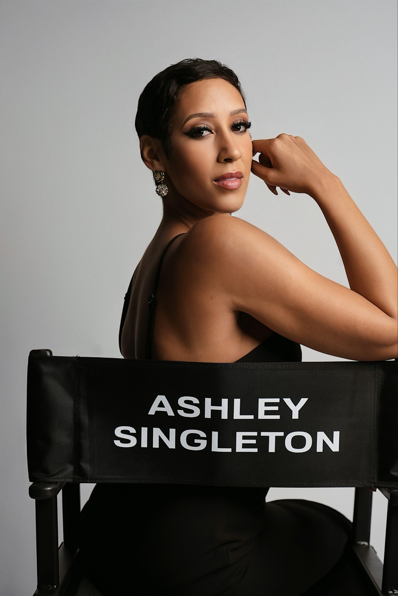

( 04 )About
Ashley Nicole
Singleton
Television Host, Media Personality, Producer & Creator

A career built around people, production, and a willingness to take the next opportunity has led Ashley Singleton from large-scale events and brand experiences into television, entertainment, and original programming. Today, she is a rising television host whose work brings together strong on-camera presence, genuine connection, and a love of great stories.
Currently a co-host on Cedric the Entertainer’s FanRoom Live, she previously was the host and on-camera face of Behind the Scenes Las Vegas (BTSLV). Her entertainment career has included work with actors, musicians, athletes, and industry leaders including Terrence Howard, Billy Zane, T-Pain, Ne-Yo, Flavor Flav, Brian Austin Green, O.T. Genasis, Dave Asprey, Malin Akerman, and Michael Jai White.
Television & Entertainment
Polished, prepared, and never afraid to have a little fun, her interview style creates room for personalities to come through. Her work includes movie set interviews with cast and production teams, celebrity red carpets, and coverage of productions and events including Redemption, The Hook, Dustlands, WWE, Global Gaming League, Waltzing with Brando, Shaken & Stirred, and Biohack Yourself.
The goal is simple: make people comfortable enough to give the audience something they haven’t seen before. The best moments often happen when a conversation moves beyond the expected questions and the person behind the public image gets a chance to come through.
Where It All Began
Long before stepping in front of the camera, she began building her career in 2009 through professional event design, production, and planning. Over the years, her work has included high-profile experiences for AWS, the NFL, GoPro, the Museum of the Bible, adidas, T-Mobile, and SeriesFest.
Those years behind the scenes shaped a practical understanding of production, timing, people, pressure, and what it takes to bring a big idea to life. They also built the confidence to walk into almost any environment, figure out what needs to happen, and make it happen.
Television became the natural next chapter, bringing together years of production experience with a personality that belongs on camera.
Creator of Seventh Gear
She wanted to take celebrity interviews somewhere unexpected. The result was Seventh Gear, an original unscripted television series she created, hosts, and executive produces.
The idea hit while preparing to interview Keanu Reeves at the Chicano Hollywood Film Festival. Both riders, Ashley wondered what might happen if the cameras, crowds, and red carpet disappeared and the conversation moved to the road.
That question became Seventh Gear.
Built with the visual language of a feature film and road movie, the series combines celebrity interviews, motorcycles, adventure, music, travel, and human exploration. Each episode pairs Ashley with a notable personality for a ride filled with stories, laughter, honesty, and the conversations audiences rarely get to hear.
Seventh Gear is a mindset for the moments when six gears aren’t enough. It is about finding the strength to keep moving when the road gets difficult.
For Ashley, riding represents freedom, peace, adventure, and joy. The motorcycle becomes part of the conversation itself, creating an environment where people can let their guard down and talk differently than they might in a studio or on a red carpet.
The first episode is currently in production, with the series being developed for television, studios, networks, and distribution partners.
A Career in Motion
There is a clear thread running through everything she has done: people come first.
A large-scale production, a celebrity interview, or an original television series all require the same thing: preparation, personality, and a willingness to take the conversation somewhere unexpected.
Her career is guided by three simple principles:
Curiosity fuels ideas. Connection elevates people. Authenticity is the advantage.
The next chapter is television, but the ambition goes beyond simply being on camera. Ashley is passionate about creating work that feels real, finding people with something worth saying, and building a career with room to keep evolving.